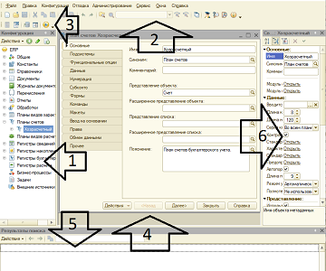

Мода, стиль и история
1С:Предприятие 8. Версия для обучения. Старт для будущего разработчикаДобро пожаловать в мир 1С! Если вы читаете это, значит, решили ступить на путь разработчика или просто хотите понять, что это за «конфигуратор» такой и с чем его едят. Не волнуйтесь, сейчас всё разложим по полочкам — с юмором, но по делу. 1. Где взять бесплатную учебную версиюФирма «1С» любезно предоставляет всем желающим версию для обучения программированию. Это полноценная платформа 8.3, в которой можно создавать конфигурации, писать код и ставить эксперименты. Единственное «но»: использовать её для реального учёта на предприятии нельзя (нужно покупать коммерческую лицензию), но для обучения — самое то. Вы можете скачать учебную версию платформы на официальной странице 1С:Предприятие 8. Версия для обучения. Заполните анкету на официальном сайте «1С» в разделе учебной версии — после этого на вашу почту придёт ссылка на скачивание дистрибутива.
2. Установка клиентской части:Когда дистрибутив скачан и распакован, найдите файл setup.exe и запустите его от имени администратора. Для этого щелкните по файлу правой кнопкой мыши и в открывшемся контексном меню выберите пункт - Запуск от имени Администратора. Что вас ждёт:
Важный момент: если в процессе установки появится предложение установить драйвер защиты HASP — снимайте галочку. Для учебной версии он не нужен. Нажмите «Установить» и подождите пару минут. После завершения нажмите «Готово» — установка завершена! 🎉 3. Создание пустой базы данных (файловой версии)Теперь запускаем установленную платформу. Перед вами появится окно «Запуск 1С:Предприятия» — это своеобразный «диспетчерский пункт», где хранится список всех ваших баз. Порядок действий:
База появилась в списке — уже победа! 🏆 4. Запуск конфигуратора: вход в «святая святых»Итак, база есть. Но нам нужен не пользовательский режим, а Конфигуратор — режим разработчика. В окне запуска выделите вашу новую базу и нажмите кнопку «Конфигуратор». Если база абсолютно пустая, конфигуратор может спросить, преобразовать ли её — соглашайтесь. На экране появится рабочее окно конфигуратора. Это ваш рабочий кабинет, мастерская и штаб одновременно. 5. Панели конфигуратора: что где лежитОкно конфигуратора — это не хаос, а стройная система.

Вот основные элементы, которые вы увидите:
Что дальше?Теперь у вас есть работающий конфигуратор и пустая база. Это как чистый холст и палитра — можно начинать творить. Создайте первый справочник, добавьте пару реквизитов, запустите базу в режиме «1С:Предприятие» и посмотрите, что получилось. Удачи в обучении! 1С — это не страшно, это просто непривычно. 😉 | ||||||||||||||
| ||||||||||||||
| ||||||||||||||
| ||||||||||||||
| ||||||||||||||
| ||||||||||||||
|
Урок 2. «Hello, World!» на языке 1СИтак, друзья, вы установили платформу, создали пустую базу и даже открыли Конфигуратор. Поздравляю — вы официально стали опасны для окружающих. 😄 Сегодня мы напишем первую в жизни программу на 1С. Традиция есть традиция: это будет «Hello, World!». Кто-то скажет — банально. Но поверьте, когда вы впервые заставите компьютер напечатать эту фразу именно так, как вы задумали, вы почувствуете себя волшебником. Немного теории: как вообще исполняется код в 1СВ отличие от многих языков, где вы пишете код в файле и запускаете его в консоли, в 1С код живёт внутри объектов конфигурации. Есть несколько способов его запустить, но для первого раза самый простой и понятный — внешняя обработка. Что такое внешняя обработка? Это отдельный файл с расширением .epf, внутри которого лежит код. Он не «зашит» в саму конфигурацию, его можно легко создать, удалить, передать другу по почте. Для обучения — идеальный вариант. Что мы сделаем по шагам:
Шаг 1. Где мы находимся и куда идёмНапомню: мы в Конфигураторе. Перед нами слева дерево конфигурации — то самое, где перечислены Справочники, Документы и прочее. Внешние обработки в этом дереве не отображаются — они живут отдельно, как файлы на диске. Поэтому не ищите их в ветках, не найдёте. Смотреть надо в главное меню сверху. Шаг 2. Создаём внешнюю обработку
Шаг 3. Открываем модуль объектаВнешняя обработка, как и любой объект в 1С, имеет свой модуль — это файл с кодом, привязанный к этому объекту. Есть разные виды модулей (модуль формы, модуль объекта, модуль команды), но для нашей задачи подойдёт самый простой — модуль объекта. Как его открыть:
Шаг 4. Пишем «Hello, World!»А теперь — момент истины. Сотрите всё, что там есть (или не трогайте, если пусто) и напишите одну-единственную строку: 1c
Сообщить("Hello, World!");
Разберём по буквам:
Шаг 5. Запускаем и смотрим результатПросто так код из модуля объекта не выполнится — нужно его вызвать. Для внешней обработки есть простой способ: запустить её на исполнение через меню.
Вот тут — главный подвох для новичка. Модуль объекта сам по себе не выполняется при открытии обработки. Нужно либо нажать на кнопку, либо вызвать его через код формы. Мы пока не умеем делать кнопки, поэтому пойдём на хитрость: Обходной путь для самых маленьких:
Мини-итогСегодня вы:
Что дальше?В следующем уроке мы:
И тогда вы наконец увидите эту фразу на экране — честно-честно! 😉 А пока — поиграйтесь: поменяйте текст в кавычках на что-нибудь своё, сохраните, посмотрите, что изменилось. Главное — не бойтесь экспериментировать. 1С это любит.
|
|